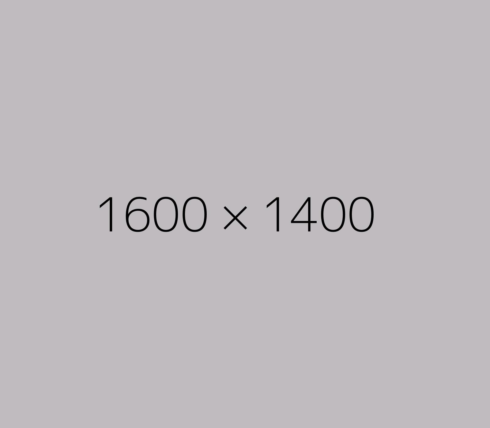

E=mc2
Proin sed varius purus, et ultricies metus. In elementum, purus at interdum feugiat, eros nibh molestie urna, eu aliquam urna justo sit amet ante. Donec ut rhoncus nibh. In hac habitasse platea dictumst. Aliquam et ligula et nibh vestibulum iaculis. Sed gravida efficitur lorem sit amet pharetra. Fusce vehicula sollicitudin purus, non efficitur arcu porta eu. Vivamus sit amet sem tempus, mattis massa eu, ultricies magna. Aliquam ut pulvinar quam.
His life highlights

1879 - Born
The son of a salesman who later operated an electrochemical factory, Einstein was born in the German Empire, but moved to Switzerland in 1895, forsaking his German citizenship the following year. Specializing in physics and mathematics, he received his academic teaching diploma from the Swiss Federal Polytechnic School in Zürich in 1900. The following year, he acquired Swiss citizenship, which he kept for his entire life. After initially struggling to find work, from 1902 to 1909 he was employed as a patent examiner at the Swiss Patent Office in Bern.
1895 - School Years
Einstein always excelled at math and physics from a young age, reaching a mathematical level years ahead of his peers. The 12-year-old Einstein taught himself algebra and Euclidean geometry over a single summer.[23] Einstein also independently discovered his own original proof of the Pythagorean theorem at age 12.[24] A family tutor Max Talmud says that after he had given the 12-year-old Einstein a geometry textbook, after a short time "[Einstein] had worked through the whole book.
1879 - Born
The son of a salesman who later operated an electrochemical factory, Einstein was born in the German Empire, but moved to Switzerland in 1895, forsaking his German citizenship the following year. Specializing in physics and mathematics, he received his academic teaching diploma from the Swiss Federal Polytechnic School in Zürich in 1900. The following year, he acquired Swiss citizenship, which he kept for his entire life. After initially struggling to find work, from 1902 to 1909 he was employed as a patent examiner at the Swiss Patent Office in Bern.
1895 - School Years
Einstein always excelled at math and physics from a young age, reaching a mathematical level years ahead of his peers. The 12-year-old Einstein taught himself algebra and Euclidean geometry over a single summer.[23] Einstein also independently discovered his own original proof of the Pythagorean theorem at age 12.[24] A family tutor Max Talmud says that after he had given the 12-year-old Einstein a geometry textbook, after a short time "[Einstein] had worked through the whole book.
His Daily Routine
- 8:00 am - Pellentesque justo odio, blandit in nisi eget, laoreet posuere libero. Quisque nec consectetur tellus, nec consectetur quam. Proin sollicitudin lacus dui, sit amet suscipit massa accumsan at.
- 11:00 am - Thasellus egestas massa quis mauris lacinia, vitae pulvinar turpis placerat. Proin elementum sapien at congue lacinia.
- 1:00 pm - Phasellus luctus, nisl sit amet finibus cursus, elit tellus semper tellus, id rhoncus leo lacus ut lectus. Duis fermentum libero ac euismod faucibus.
- 4:00 pm - Curabitur ut porttitor leo. Ut sapien purus, mattis sed leo vitae, rutrum aliquet felis. Maecenas laoreet tristique lorem at dignissim. In pharetra fringilla augue, at ultrices tellus cursus sed.
- 8:00 pm - Quisque facilisis a erat eu feugiat. Quisque vulputate dignissim dui id luctus. Nunc scelerisque at magna id efficitur. Fusce vel ultricies ligula.
- 11:00 pm - . Phasellus egestas massa quis mauris lacinia, vitae pulvinar turpis placerat. Proin elementum sapien at congue lacinia.
His Famous Quotes
The years of anxious searching in the dark, with their intense longing, their alternations of confidence and exhaustion, and final emergence into light—only those who have experienced it can understand that.
Although I am a typical loner in daily life, my consciousness of belonging to the invisible community of those who strive for truth, beauty, and justice has preserved me from feeling isolated.
Life is like riding a bicycle. To keep your balance you must keep moving.